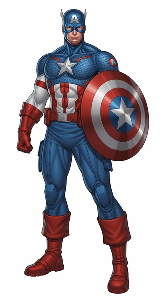

Коротко про героя
Експеримент перетворив Стіва у суперсолдата, але його головна сила завжди була у характері. Капітан Америки веде команду у найЯвлиших битвах.
Здібності та переваги
- Надлюдська фізична підготовка
- Мастер пюгового бою та тактики
- Щит із вібраніуму